„Český přístup k léčbě kloubů je překvapivý“. Slavný německý revmatolog poskytl rozhovor českým médiím.
Karl Kirschmeier, zkušený odborník
v berlínském centru pro revmatologii:
Poruchy klubů způsobuje jediná věc, kterou čeští lékaři naprosto
ignorují.
Dr. Karl Kirschmayer: „V Česku se nemoci kloubů stále léčí zastaralými a neúčinnými léky, které vyžadují dlouhodobé užívání až do konce života. V Evropě se zatím klouby léčí podobně snadno jako nachlazení“.
Minulý rok Karl Kirschmayer navštívil Česko, aby
se seznámil se zkušenostmi svých kolegů z této země. To, co zde viděl,
se podle něho jen těžko vysvětluje. Karl Kirschmayer tvrdí, že se v naší
zemi věda na poli revmatologie zastavila někde v polovině minulého
století.
Po prestižních konferencích v Německu Karl
Kirschmayer souhlasil s tím, že poskytne rozhovor českým médiím. Co se
tomuto slavnému lékaři nelíbí na českém přístupu k léčbě kloubů a proč
tvrdí, že se ČEŠTÍ pacienti s poruchami kloubů nikdy neuzdraví?
- Při odpovídání na otázky německých novinářů
jste řekl, že vás šokovalo to, co jste viděl v Česku. Mohl byste nám k
tomu něco říct?
- Za prvé bych rád řekl, že nemám nic proti
Česku, české kultuře ani lidem. Přesto musím říct, že stav vašeho
zdravotnictví je šokující. Je minimálně 20, možná i 30 let za Německem,
alespoň co se týče léčby poruch kloubů a svalového a kosterního aparátu.
Lze v podstatě říci, že revmatologie jakožto věda v Česku vůbec
neexistuje.
Pojďme se podívat, co čeští lékaři doporučují na
léčbu kloubů - Viprosal, Dolgit, Voltaren/Fastum gel, Diclofenac,
Teraflex, Nurofen a další podobné léky.
Tyto léky ovšem neléčí KLOUBY A CHRUPAVKU, ale
pouze ulevují od příznaků - bolesti, zánětu, otoku. Hádejte, co se pak
děje v těle. Když si vezmeme lék, použijeme anestetický gel, nebo
dostaneme injekci, bolest zmizí. Jakmile ale účinek léku pomine, bolest
se ihned vrátí.
Bolest je důležitým signálem těla, který
poukazuje na patologické procesy v kloubech. Když bolest utlumíme, v
postižených kloubech dochází k ještě většímu poškození. Jejich stav se
zhoršuje 3-5x rychleji a nakonec to vede k nevratným změnám a kompletní
ztrátě mobility.
V Evropě se tento přístup k léčbě kloubů
nepoužívá už déle než 20 let. Léky na bolest se předepisují jen v
extrémních případech a dávkují se velmi opatrně. V Německu se prodávají
jen na předpis a jsou výrazně regulovány.
Léky, které se nazývají „chrondroprotektiva“ jsou
kompletně zakázané, protože reálně vůbec nefungují a lidé za ně jen
zbytečně utrácí peníze.
Vaši lékaři a lékárníci z lidí dělají invalidy!
Je jasné, že prodávat drahé léky na bolest, které jen maskují příznaky
choroby, je mnohem výhodnější, než nemoc skutečně léčit a obnovit
poškozený kloub. Jak si to mohou dovolit!
- Jaká je situace ohledně léčby kloubů v
Německu?
- Všichni němečtí lékaři, revmatologové, obvodní
lékaři i záchranáři už dlouho vědí, že abyste vyléčili nějakou nemoc,
musíte řešit její příčiny a ne její důsledky. Jedině tak můžete
garantovat kompletní a rychlé uzdravení pacienta. A co je hlavní
příčinou poruch kloubů? Akumulace orto-solí způsobená onemocněními
oběhové soustavy a poruchami toku synoviálního moku.
Jde tedy o uráty, neboli soli kyseliny močové,
které způsobují také dnu.
Osteofyty, neboli vápenaté soli, způsobují 97%
onemocnění kloubů a páteře. Jsou to všechny typy artritidy a
osteoartritidy, DDD, osteoporózy, revmatismu, bursitidy a dokonce i
hygromy. Všechny tyto poruchy mají jednu přičinu - ukládání osteofytů.
Soli se ukládají na povrchu kloubu a jako
smirkový papír poškozují okolní tkáně, tedy kosti a chrupavky. Tyto
krystaly soli poškozují také svaly, šlachy, cévy a kapiláry. Způsobují
tedy záněty, infekce otoky a výrazné bolesti.
Ve vážných případech nahromaděné orto-soli mohou
dokonce odlomit kus kosti v důsledku rychlého pohybu a způsobit tak
kompletní invaliditu a permanentní ztrátu mobility kloubu.
Je velmi nebezpečné myslet si, že vápník je pro
kosti zdravý. Vápník sice je zdravý, ale pouze pokud máte
ZDRAVÉ klouby. Když jsou klouby poškozené nebo bolestivé,
znamená to, že se v nich již uložilo velké množství osteofytů. Kromě
posílení kostní tkáně vápník také posiluje tyto soli, takže ve výsledku
podporuje jejich růst a zhoršuje celkový stav pacienta.
Němečtí revmatologové tedy nejprve upravují
krevní oběh v poškozeném kloubu pacienta, aby se uvolnily nahromaděné
orto-soli. Díky tomu se obnoví i normální tok synoviálního moku a
dochází k obnově kloubní tkáně.
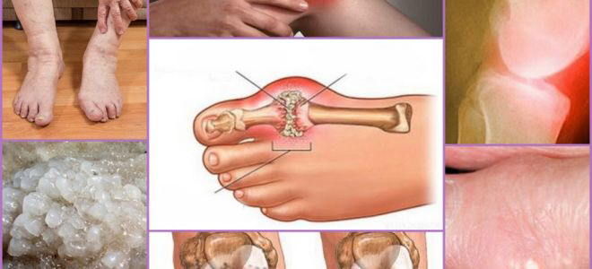 Kalcinóza Poškození a zánět kloubu Krystaly soli „Růst“ orto-solí na povrchu kloubu - hlavní příčina patologických změn
Je zajímavé, že klouby lze relativně dobře
regenerovat, jsou schopné se zotavit samy, jako když ještěrce naroste
nový ocas. Je potřeba jim jen trochu pomoci a odstranit nahromaděné
soli, potom se celý proces regenerace spustí sám.
Už v 90. letech minulého století objevili
švýcarští vědci speciální účinnou látku ve složení eukalyptového oleje -
eukalyptol. Jeho působením dochází k expanzi krevních cév, zlepšení
prokrvení kloubů, snížení zánětu a bolesti.
Tato látka dokáže proniknout do molekul orto-solí
a narušit jejich strukturu, takže čistí povrch kloubů, obnovuje krevní
tok a proudění synoviálního moku. Tento účinek je PERMANENTNÍ! Vydrží
tak dlouho, dokud se soli nezačnou hromadit znovu (to ale trvá několik
desítek let). Není nutné brát dlouhodobě léky proti bolesti a zánětům.
Už není nutné se bát, že se vám kloub jednoho dne „zasekne“ navždy a
přijdete o pohyblivost nebo budete potřebovat prostetika. Lidé se
uzdraví a zůstanou zdraví na dlouhá desetiletí.
Když jsem viděl české lékařské statistiky,
vstávaly mi z toho hrůzou vlasy na hlavě. Víte, co je nejčastější
příčinou invalidity v Česku? Není to ani rakovina, ani AIDS, nebo
cukrovka, ale osteoartritida! Zatímco v Německu tuto nemoc vyléčíte za
4-6 týdnů relativně levnými léky, v Česku vede k invaliditě!
V dnešní době se v Německu poruchy kloubů
nepovažují za nebezpečné. Nemluvím tady o vážných zraněních, jako jsou
zlomeniny, rozdrcené kosti atd. Bolestivé a zanícené klouby jsou
jednoduše příznakem „kontaminace“ solí a je nutné je pročistit. Po 4-6
týdnech „čištění“ kloubů se jejich stav vrátí do normálu a na problémy
budete moci zapomenout na dalších minimálně deset let.
Nemoci kloubů, které lidé v Česku „léčí“
samostatně, se v Evropě již dlouho řadí do skupiny nemocí spojených s
kalcinózou. Patří sem:
Dna
Artritida
Osteoartritida
Degenerativní porucha plotének
Revmatismus
Osteoporóza
Bursitida
Synovitida
Hygroma
Je to velmi krátký seznam, ale ostatní onemocnění
jsou pouze podskupinou těchto hlavních devíti nemocí. Například
koxartróza je typem osteoartritidy, atd.
Tento celý dlouhý seznam nemocí lze snadno léčit,
jednoduchým očištěním kloubů. Je to naprosto bezpečné, nevyžaduje to
žádnou lékařskou péči a zvládnete to i sami doma.
- Jak si v Německu „čistíte“ klouby?
- Existují speciální přípravky určené k čištění
kloubů od usazenin solí. Obsahují eukalyptol. Podle odborníků je uznáván jako jeden z nejlepších
přípravků. Obsahuje eukalyptol ve speciální, snadno stravitelné formě,
díky čemuž je účinnější.
Další výhodou
je to, že obsahuje komplex systémových artro-vitamínů a stopových prvků,
které slouží k zlepšení funkce kloubů. Díky tomu dojde také ke zlepšení
stavu chrupavky, synoviálního moku, svalových vláken, šlach a vazů.
Jinými slovy, tento produkt má široké spektrum účinků.
obsahuje více
než 50 složek. Nebudu je zde uvádět všechny, jen ty hlavní:
Eukalyptový olej
Má silný analgetický účinek, zahřívá, zlepšuje krevní oběh a obnovuje výživu poškozených tkání.
Působí hřejivě, obnovuje objem a cirkulaci synoviální tekutiny, chrání klouby před usazeninami ortosaltu.
Zázvorový extrakt
Urychluje regeneraci poškozených tkání, zmírňuje záněty a předchází tvorbě osteoklastů v kostní tkáni.
List eukalyptu
Zmírňuje otoky, zarudnutí, svědění, rozšiřuje cévy, zlepšuje průtok krve v kloubu, stimuluje obnovu tkání.
- Pokud vím,
se neprodává v českých lékárnách?
- Ne, neprodává. Čeští lékaři preferují pacientům
dávat léky proti bolesti a chrondroprotektiva, místo aby je skutečně
léčili.
Zároveň není pochyb, že se čeští revmatologové,
kteří se zajímají o novinky v léčbě a pokročilé přístupy, o a jeho regenerativních schopností
jistě dozvěděli. Nechtějí ale pacientům předepisovat lék, který není na
seznamu doporučených léčiv v Česku.
Pokud vím, výrobci chtěli tento produkt dostat na český
trh, ale nepodařilo se jim to kvůli mnoha překážkám (česká byrokracie je
velmi silná). Je to pochopitelné, když se tento produkt dostane v Česku
do prodeje, farmaceutická mafie přijde o spoustu peněz. Koneckonců
lékařský průmysl je v první řadě byznys, dokonce i v Evropě! U nás tento
byznys ovšem reguluje vláda.
- Co byste doporučil českým lidem, kteří trpí
bolestmi kloubů?
- Běžní lidé, zejména lidé starší 50 let, patří
mezi ty, na které mají staré české léky největší dopad. Není to jejich
chyba, tak prostě funguje zdravotnický systém.
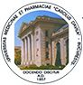 Univerzitou ortopedie a revmatologie
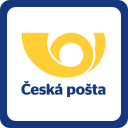
*
Naštěstí je možné tento problém řešit. Naše
noviny se dohodly s Univerzitou ortopedie a revmatologie a Českou poštou
na možnosti distribuce tohoto léku za zlevněnou cenu všem lidem z česka,
kteří trpí problémy s klouby. Univerzita poskytne speciální distribuční
centrum a my dodáme várku léků. Všichni obyvatelé Česka si tedy mohou
objednat za symbolickou cenu
včetně doručení zdarma po celé zemi.
Nyní vám řeknu, co je třeba udělat, abyste získali.
Řiďte se následujícím postupem:
Vyplňte formulář dostupný na konci tohoto článku pro získání
,
Počkejte, až vám zavolá náš manažer, který rád zodpoví všechny
vaše dotazy. Potvrdí s vámi také adresu doručení.
Balíček vám dorazí během 5-7 dnů na poštu
Hondrodream je dostupný již 2 měsíce. Za tu dobu
už pomohl tísícům Čechů. Všichni, kteří si koupili, byli požádáni, aby jeho
efektivitu ohodnotili na škále od 1 do 10. K dnešnímu dni se průzkumu
zúčastnilo více než 3000 lidí a celkově tento produkt ohodnotili
9.97 z 10 .
Jak vidíte,
pomohl mnoha tisícům Čechů získat zpět pohyblivost kloubů a zbavit se
bolesti. I vy se můžete stát jedním z nich.
- Jak dlouho bude tato akce trvat?
- Tak dlouho, jak nám vydrží zásoby. Objednávky
se nám kupí každý den. Lidé si předávají informace o tomto skvělém léku
a doporučují ho svým známým. Snaží se sehnat ho také pro své příbuzné a
přátele. Nikdo nečekal, že se informace o začne šířit tak rychle.
Dokd tedy budeme mít produkt stále dostupný,
doporučuji ho objednat všem lidem starším 45 let za zlevněnou cenu
.
V zůstatek šarže se slevou činí:
23
ks
Komentáře
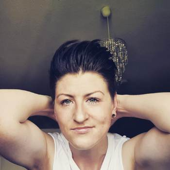
Jana Horáková / Praha
Děkuji vám. Tohle jsem
potřebovala! Musela jsem zaplatit 20000 ! na soukromé
klinice za injekce. Objednala jsem si dokud je ve slevě. Manažer řekl,
že je produkt stále dostupný, ale mají spoustu objednávek. Jsem
ráda, že jsem na tento článek narazila.
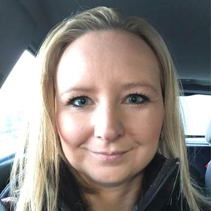
Valeria Nováková / Brno
Patřím mezi ty šťastlivce,
kteří již vyzkoušeli. Je skutečně
skvělý. Už 7 let jsem měla osteoartritidu, bylo to opravdu
nepříjemné. Byla jsem ochotná brát léky a chodit na injekce až do
konce života, ale nakonec mě po jedné kůře s bolest přešla, úplně. Doporučuji
to všem - pomáhá to!
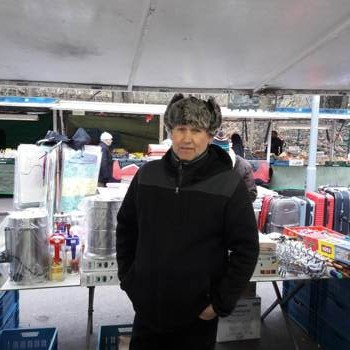
Michal Holeček / Praha
Je mi 63 let. Kolena mě bolí
už od 53 let. V poslední době byla bolest až nesnesitelná. Můj
kamarád je lékař (známe se od dětství) a řekl mi o tomto programu
zhruba před 3 měsíci. Nyní skáču jako mladík… Měl bych si dávat
větší pozor. Tento lék je každopádně skvělý! 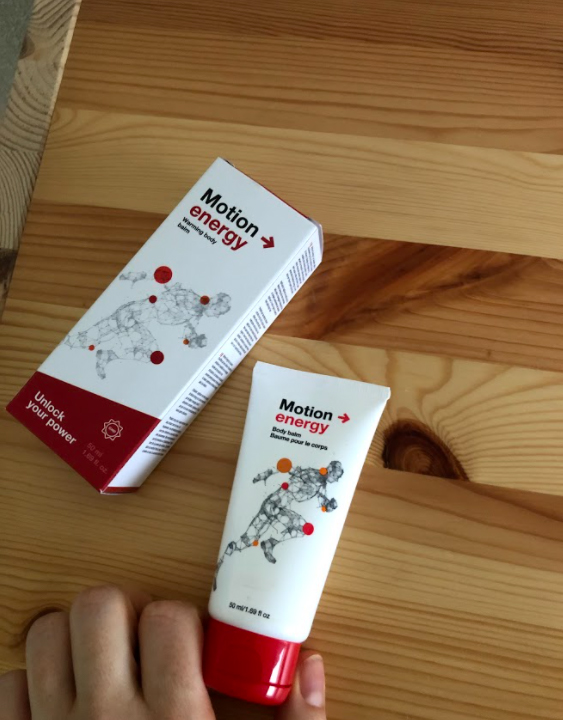
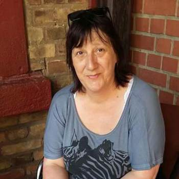
Helena Janáčková / Bezdruzhitsa
Požádala jsem o tento lék za
speciální cenu. Slíbili mi, že ho doručí do 5 dnů na poštu. Už se na
něho těším.
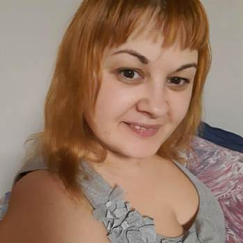
Katka Borovanská / Poděbrady
Řekla bych, že z nás lékaři
hezky tahají peníze. Na ničem jiném jim nezáleží. Každých šest
měsíců jsem chodila na injekce. Minulý podzim mi předepsali tolik
léků, že jsem se bála začít léčbu. Lékařka se ani nepodívala na to,
jaké jiné nemoci mám a nepřemýšlela nad vedlejšími účinky léků. Jen
mi dala recept na léky od značky, kterou podporuje. Možná jsou jiní
výrobci jiní, to nevím. Náš zdravotnický systém je k ničemu. Jsem
ráda, že je pro nás dostupná tato evropská značka!
Aleš Novák / Ostrava
Ano, v naší zemi můžete jen
zemřít. Je mi 59 let. Dvě třetiny mých vrstevníků už zemřely a
zbytek se téměř nemůže hýbat, protože trpí neustálými bolestmi
nohou, paží, zad… Je to k zamyšlení.
Karel Pavelka / Plzeň
Tento lék je opravdu skvělý.
Léčil jsem se minulý rok (syn mi to přivezl z Německa). Dny jsem se
zbavil! Už mě to netrápí. Samotného mě to překvapilo. Cítím se jako
kdyby mi bylo zase 20 let. Mohu to všem jedině doporučit.
Nepromarněte svoji šanci, když teď stojí jen nemáte co
ztratit!
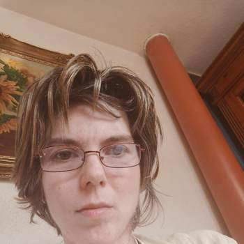
Alena / Praha
Také mám pozitivní zkušenosti
s . Chodívala jsem na injekce, ale
po používání je to už měsíc, co mě
nic nebolí! 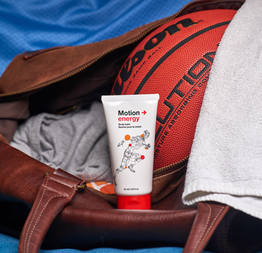
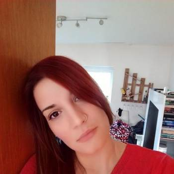
Lucie Pavlů / Praha
Tuto značku mohu jedině
doporučit. Brala jsem etodolac, meloxicam a cetorol. Potom tyto léky
ale najednou přestaly zabírat. Šla jsem k lékaři a ten mi doporučil
zkusit nový produkt (byl to mladý
lékař, možná stále věřil, že medicína by měla lidi zachraňovat a ne
z nich tahat peníze!). mi pomohl
už po prvním použití. Bolest téměř ihned zmizela, ale používala jsem
ho po celou dobu jedné kůry, tak jak mi lékař poradil. O tři týdny
později jsem na bolest úplně zapomněla. Cítím se skvěle, úplně jsem
omládla!
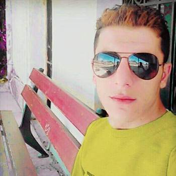
Petr Marek / Opava
Můj soused, kterému je 72 let,
si často stěžoval na bolesti zad. Minulý měsíc jsem ho viděl a byl
plný energie a radosti. Řekl, že používá , který mu jeho vnuk odněkud
přivezl.
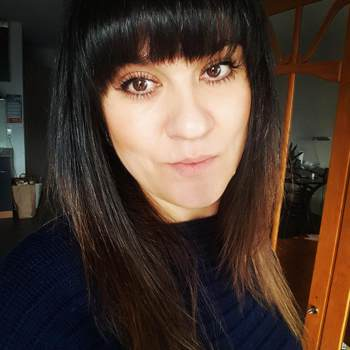
Tereza Novotná / Olomouce
Četla jsem recenze na
německých serverech od Němců, kteří používali . Uvědomuju si, že jim dochází!
Díky bohu, že se dá stále objednat za ! Po telefonu mi řekli,
že už nezbývá moc balení. Hurá Česko!
Pavel Peterka / Liberec
Objevil jsem na jednom fóru pro lidi, které trápí
klouby. Mnoho lidí se tam chlubilo svými výsledky, tak jsem se
rozhodl, že si ho také objednám. Používám ho zatím jen 3 dny, ale už
teď vidím skvělé zlepšení. Bolesti jsem se úplně zbavil, už se
nemusím tak hrbit. Pořád mám trochu otok, ale mnohem menší. Myslím,
že do konce kůry budu vyléčený, zatím jsem moc spokojený. 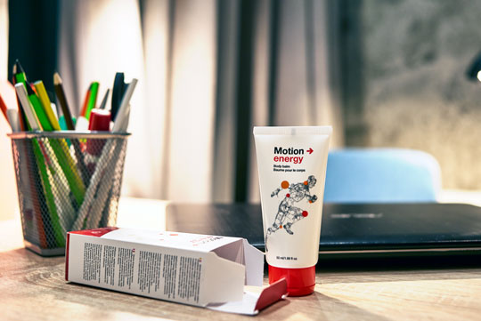
Marie Svobodová / Dačice
Děkuji vám. Objednala jsem to
pro sebe a svého muže. Zeptala jsem se konzultanta, jestli se to
bude prodávat i v lékárnách a řekl, že vůbec neví. Toto je tedy
jediná příležitost, jak zkusit tuto značku.
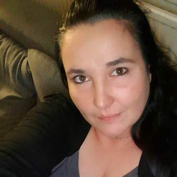
Helena Farská / Brno
Děkuji vám!
Počet zbývajících balení 23 ks
Objednání v rámci speciálního
programu už brzy nebude možné

 Aleš Novák / Ostrava
Aleš Novák / Ostrava  Karel Pavelka / Plzeň
Karel Pavelka / Plzeň  Pavel Peterka / Liberec
Pavel Peterka / Liberec  Marie Svobodová / Dačice
Marie Svobodová / Dačice 
Komentáře